道交條例第三條：道路、車道、車輛
- 道路：公路、街道、巷衖、廣場、騎樓、走廊、其他供公眾通行之地方。
- 車道：以劃分島、護欄或標線劃定道路之部分、其他供車輛行駛之道路。
- 車輛：非依軌道電力架設，而以原動機行駛之汽車（包括機車）、慢車及其他行駛於道路之動力車輛。
本府車管要點二：車輛管理對象範圍
- 所稱車輛，指依法由公路監理機關登記管理並領有牌照之汽車（四輪以上）、機車、拖車，及須行駛道路之動力機械。(注意：不含慢車)
- 汽車依其牌照登記之車別種類，區分為大客車、大貨車、大客貨、大代客、曳引車等大型車；小客車、小貨車、小客貨、小代客等小型車。
車輛分類
汽車
- 大型車：指總重量逾3.5噸，或全部座位在10座以上之汽車。但109.9.4以後領照，總重量逾3.5至5噸且全長6公尺以下之貨車，為小貨車。
- 小客貨、貨車駕駛室與載貨空間
- 道安規則：小客貨指核定總重量3.5噸以下，並核定載人座位9座以下，其最後一排座椅固定後，後方實際之載貨空間達1立方公尺以上者（第3條）、客貨車載客與載貨空間應裝設固定式或隨車配附非固定式之間隔裝置，載貨空間車窗應裝設固定式金屬欄杆（第87條）。
- 道安規則第41條：貨車駕駛室連駕駛人座位不得超過3個座位。但貨車駕駛室具前後二排座位且另有不同車身做為載貨空間使用者，小貨車連駕駛人座位不得超過7個，大貨車不得超過9個座位
- 原生一體廂式小型車（載客貨空間與駕駛座位於相同封閉空間，又稱麵包車、箱型車），可打造為廂式小客車、廂式小客貨（限國產車）、廂式小貨車，或幼童車（娃娃車），外觀基本相同，但為廂式小貨車時車內除第一排駕駛區外，原則上均為封窗式載貨空間，無第二、三排座椅。
- 具車斗（貨床）之小貨車，如車斗改裝為廂式，亦可稱為廂式小貨車，容易與前述一體式廂式小貨車混淆，此時的「廂式」指的是載貨空間的式樣為廂式（另有框式、蓬式等），不包含駕駛室。
- 貨車的駕駛室一般均為單排三人座的封閉空間，且行照的車身式樣不會針對駕駛室記載式樣，但如駕駛室具前後二排座位者，會另外記載「雙廂式」的式樣，為針對貨車駕駛室特有的附加式樣，但一般還是會對載貨空間的外形記載其主式樣。
- 車管要點八III：各機關座位數三人以下之小貨車，得由各負責清查之一級機關依業務情況另訂閒置、低度使用認定標準。
- 網文參考：什麼是客貨兩用車 後車箱一定要裝金屬橫桿嗎？
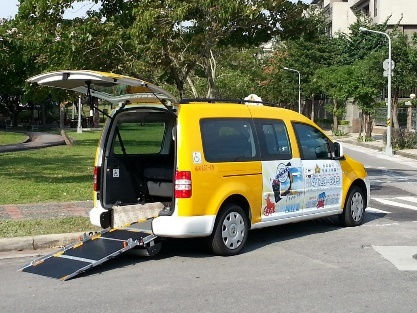 |
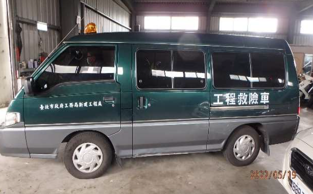 |
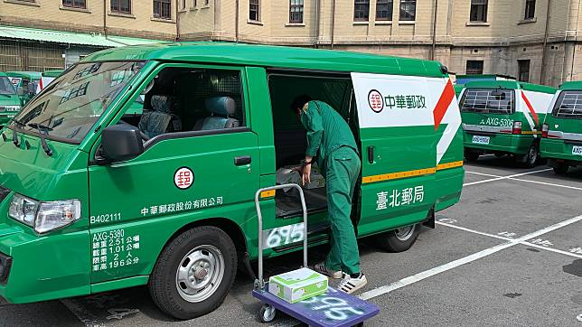 |
| 廂式小客車(福祉車通用計程車) | 廂式小客貨(限國產車) | 廂式小貨車(原生一體式) |
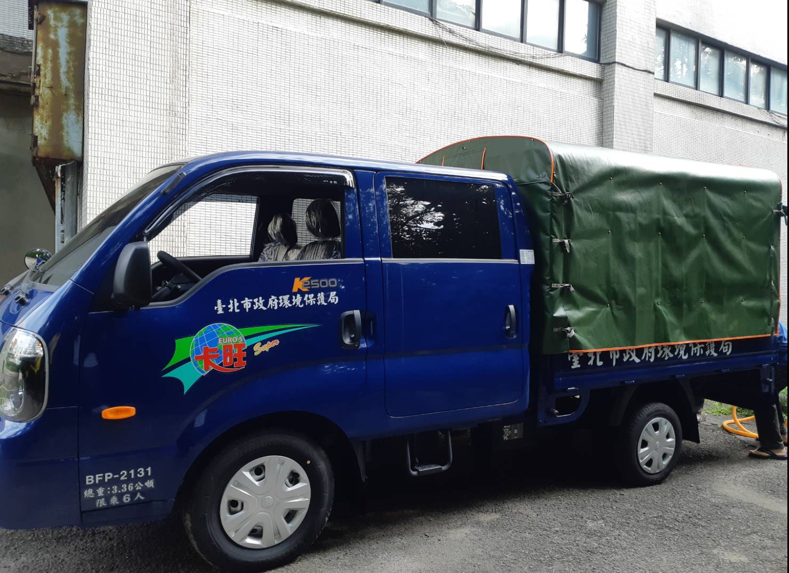 |
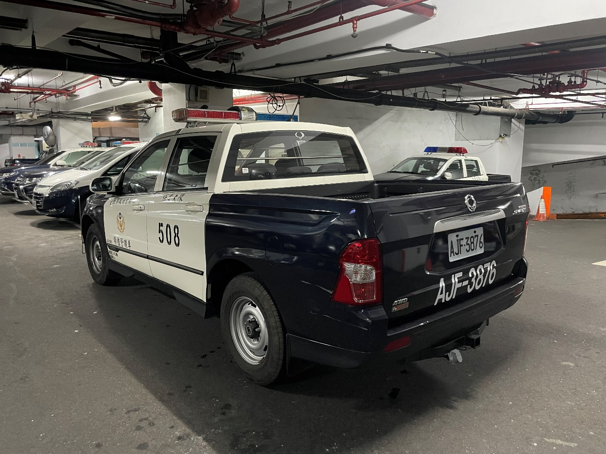 |
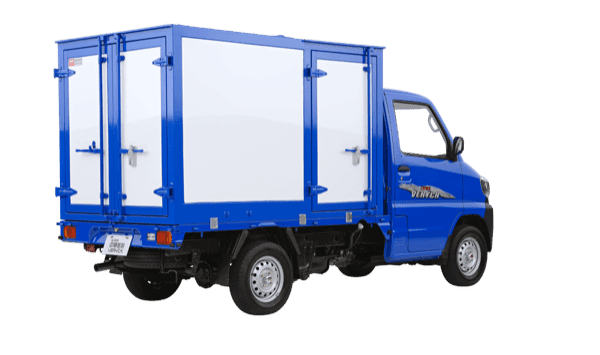 |
| 雙廂式小貨車（主式樣為框式） | 雙廂式小貨車(通稱皮卡) | 廂式小貨車(車斗改裝外掛式) |
- 代用客車：指不載貨時代替客車使用之貨車。
- 媒體報導：工務車車斗載人不違法？ ／ 軍卡自撞路樹7人送醫
機車
- 二輪機車
| 車種名稱 | 小型輕型 | 普通輕型 | 普通重型 | 大型重型 | |
|---|---|---|---|---|---|
| 黃牌 | 紅牌 | ||||
| 車牌款式 | SAC－0000 | QAL－0001 | MAY－0001 | LAD－0001 | LGA－0001 |
| 燃油機車 | 不適用 | 0～50cm³ | 51～250cm³ | 251～549cm³ | ≧550cm³ |
| 電動機車 | 0～1.33HP | 1.34～5HP | 5.1～40HP | 40＞HP＞54 | ≧54HP |
- 三輪機車：以車輪為前1後2或前2後1對稱型式排列之機車為限，但2輪之輪距未逾46公分者視為單輪。
- 身障特製車：傳統指以二輪機車改裝（無側傾功能）限供身心障礙者用之特製車（無臂蛙后爭取考照）。
- 側傾式／封閉式車頂三輪機車：現已有具側傾功能 或封閉式車頂 之三輪機車，並開放持機車駕照一般個人使用。
- 商用三輪電動機車：近年亦開放物流專用商用三輪電動機車，依道安規則第88條，具封閉式貨箱之電動三輪重型機車不得超過200公斤，裝載貨物不得超出貨箱以外。
- 駕艙機車：115年2月交通部預告修正《道路交通安全規則》部分條文，研擬新增駕艙機車：
- 外型為具封閉式車室及方向盤式轉向系統的三輪機車。
- 比照機車型式領牌，但考量操作介面近似於汽車，必須持有小型車以上駕照才能駕駛。
- 路權屬小型車，除非有起駛、轉彎、準備停車等動作外，在劃有快、慢車道分隔線（10公分白色實線）道路，不可行駛於慢車道。
- 不得行駛高速公路或快速道路。
- 驗車比照小型車，出廠滿5年開始必須定期檢驗、10年以上2次。
- 隔熱紙透光率必須滿足前擋70%、前側窗40%的可見光透過率標準。
- 除機車格外，開放停放小型車停車位。
- 不用配戴安全帽，但前座、後座乘客強制配戴安全帶。
- 解說影片：前往
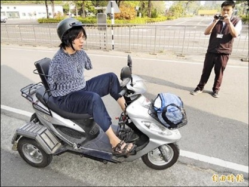 |
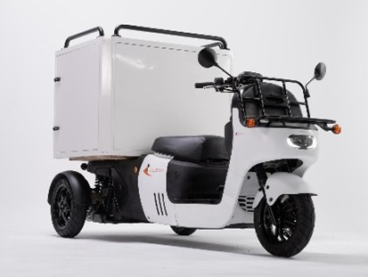 |
| 身障特製三輪機車 | 商用電動三輪機車 |
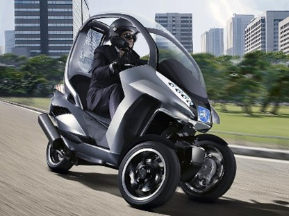 |
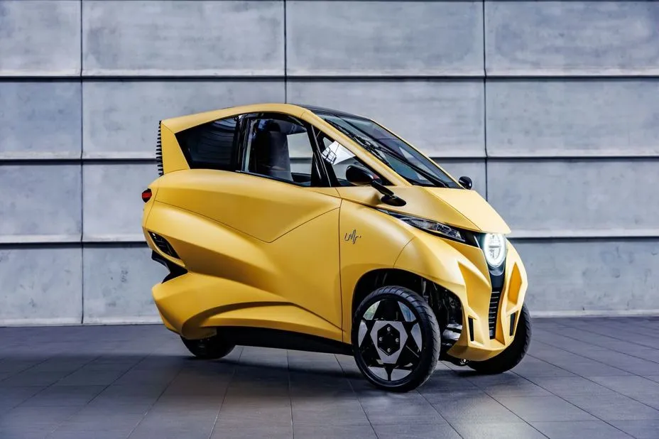 |
| 具側傾功能及封閉車頂三輪機車 | 駕艙機車(預告開放) |
慢車
- 道路交通管理處罰條例第69條：區分為自行車、其他慢車2類。
- 自行車：
- 腳踏自行車。
- 電動輔助自行車：指經型式審驗合格，以人力為主、電力為輔，最大行駛速率在每小時25公里以下，且車重在40公斤以下之二輪車輛。
- 微型電動二輪車：指經型式審驗合格，以電力為主，最大行駛速率在每小時25公里以下，且車重不含電池在40公斤以下或車重含電池在60公斤以下之二輪車輛。
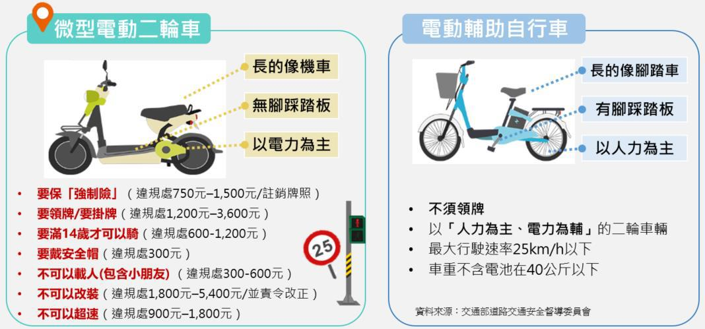 |
| 微型電動二輪車與電輔自行車 |
- 其他慢車：
- 人力行駛車輛：指客、貨車、手拉（推）貨車等。包含以人力為主、電力為輔，最大行駛速率在每小時25公里以下，且行駛於指定路段之慢車。
- 獸力行駛車輛：指牛車、馬車等。
- 個人行動器具：指設計承載一人，以電力為主，最大行駛速率在每小時25公里以下之自平衡或立式器具，例如電動滑板、電動滑板車、自平衡車、電動獨輪車。
- 個人行動器具，應依直轄市、縣（市）政府所定規格、指定行駛路段、時間、速度限制、安全注意及其他相關管理事項辦法之規定，始得行駛道路。違反者，處行為人1,200~3,600罰鍰，並禁止其行駛或使用。
拖車、動力機械
- 拖車
- 指本身無動力而由汽車牽引之車輛；總重逾750公斤為重型。
- 節目介紹：拖曳露營拖車規定多 車主上路前要注意
- 新聞報導：網紅合法用重機拖車遭攔查 警喊「第一次遇到」
- 指本身無動力而由汽車牽引之車輛；總重逾750公斤為重型。
- 非屬汽車範圍之動力機械
其他特殊動力器具
- 有輪子供載人但非屬慢車之特例：醫療電動代步車、動力式輪椅等，視為行人輔具。
- 古董車：依道路交通管理條例第15條、道路交通安全規則第2條第1項第26款，車齡逾35年經交通部委託之審驗機構審驗合格之小客車及機車，得限定領用古董車專用牌照。
- 農機：農民、政府機關或公營事業，依農業部農業機械使用證管理作業規範 申請農機使用證之農地搬運車或農用曳引機、自走式噴霧車、大型聯合收穫機、甘蔗採收機及狼尾草（青割玉米）收穫機等四輪以上具動力可於道路行駛之膠輪式農機，應同時申領農機號牌，懸掛於農機機身之前方或後方明顯適當處，該農機始得於市區道路或公路行駛，其在市區道路上行駛每小時速度不得超過10公里，公路上行駛不得超過20公里。
- 其他：
- 未經核准領用牌證之拼裝車輛：依道路交通管理條例第15條，拼裝車輛未經核准領用牌證行駛，或已領用牌證而變更原登檢規格、不依原規定用途行駛者，處3,600~36,000元罰鍰，並當場移置保管該車輛(當場沒入並銷毀)。但少數地方政府為了發展觀光，另採專案納管或限定區域時段方式容忍其存在。
- 其他動力器具：依道安規則 第83-3條，非屬汽車、動力機械及個人行動器具範圍之動力載具、動力運動休閒器材或其他相類之動力器具，不得於道路上行駛或使用。例如：高爾夫球車、沙灘車。但少數地方政府（如離島或特定觀光區）可能會針對特定路線訂定自治條例准許高爾夫球車行駛。